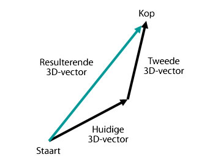
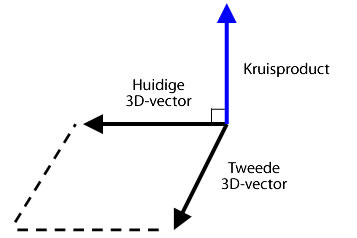

| Pakket | flash.geom |
| Klasse | public class Vector3D |
| Overerving | Vector3D |
| Taalversie: | ActionScript 3.0 |
| Runtimeversies: | Flash Player 10, AIR 1.5 |
x de horizontale as voor en stelt de eigenschap y de verticale as voor. In een driedimensionale ruimte stelt de eigenschap z diepte voor. De waarde van de eigenschap x neemt toe naarmate het object naar links verschuift. De waarde van de eigenschap y neemt toe naarmate het object naar beneden verschuift. De eigenschap z neemt toe naarmate het object zich verder van het gezichtspunt verwijdert. Met perspectiefprojectie en schalen wordt het object groter gezien wanneer het dichtbij is en kleiner wanneer het zich verder van het scherm bevindt. Zoals in een rechtshandig driedimensionaal coördinatensysteem wijst de positieve Z-as van de kijker weg en neemt de waarde van de eigenschap z toe naarmate het object zich verwijdert van het oog van de kijker. Het punt van oorsprong (0,0,0) van de globale ruimte is de linkerbovenhoek van het werkgebied.

De klasse Vector3D kan ook een richting voorstellen, een pijl die van de oorsprong van de coördinaten, zoals (0,0,0), naar een eindpunt wijst, of een drijvende-komma onderdeel van een RGB-kleurenmodel (rood, groen, blauw).
De viertal-notatie introduceert een vierde element, de eigenschap w, die aanvullende oriëntatie-informatie verstrekt. De eigenschap w kan bijvoorbeeld een rotatiehoek van een Vector3D-object definiëren. De combinatie van de rotatiehoek en de coördinaten x, y en z kunnen de oriëntatie van het weergaveobject bepalen. Hier volgt een voorstelling van Vector3D-elementen in matrixnotatie:

Verwante API-elementen
 Overerfde openbare eigenschappen verbergen
Overerfde openbare eigenschappen verbergen Overerfde openbare eigenschappen weergeven
Overerfde openbare eigenschappen weergeven| Eigenschap | Gedefinieerd door | ||
|---|---|---|---|
 | constructor : Object
Verwijzing naar het klasseobject of de constructorfunctie van een bepaalde objectinstantie. | Object | |
| length : Number [alleen-lezen]
De lengte, grootte, van het huidige Vector3D-object vanaf de oorsprong (0,0,0) tot de X-, Y- en Z-coördinaten van het object. | Vector3D | ||
| lengthSquared : Number [alleen-lezen]
Het vierkant van de lengte van het huidige Vector3D-object, vermenigvuldigd met de eigenschappen x, y en z. | Vector3D | ||
| w : Number
Het vierde element van een Vector3D-object (naast de eigenschappen X, Y en Z) kan gegevens bevatten als de rotatiehoek. | Vector3D | ||
| x : Number
Het eerste element van een Vector3D-object, zoals de X-coördinaat van een punt in een driedimensionale ruimte. | Vector3D | ||
| y : Number
Het tweede element van een Vector3D-object, zoals de Y-coördinaat van een punt in een driedimensionale ruimte. | Vector3D | ||
| z : Number
Het derde element van een Vector3D-object, zoals de X-coördinaat van een punt in een driedimensionale ruimte. | Vector3D | ||
| Methode | Gedefinieerd door | ||
|---|---|---|---|
Maakt een instantie van een Vector3D-object. | Vector3D | ||
Telt de waarde van de elementen X, Y en Z van het huidige Vector3D-object op bij de waarden van de elementen X, Y en Z van een ander Vector3D-object. | Vector3D | ||
[statisch]
Retourneert de hoek in radialen tussen twee vectoren. | Vector3D | ||
Retourneert een nieuw Vector3D-object dat een exacte kopie is van het huidige Vector3D-object. | Vector3D | ||
Hiermee worden alle vectorgegevens gekopieerd van het Vector3D-bronobject naar het aanroepende Vector3D-object. | Vector3D | ||
Retourneert een nieuw Vector3D-object dat rechthoekig is (met een rechte hoek) ten opzichte van het huidige Vector3D en een ander Vector3D-object. | Vector3D | ||
Verlaagt de waarde van de elementen X, Y en Z van het huidige Vector3D-object met de waarden van de elementen X, Y en Z van een opgegeven Vector3D-object. | Vector3D | ||
[statisch]
Retourneert de afstand tussen twee Vector3D-objecten. | Vector3D | ||
Als het huidige Vector3D-object en het object dat als parameter is opgegeven, eenheidshoekpunten zijn, retourneert deze methode de cosinus van de hoek tussen de twee hoekpunten. | Vector3D | ||
Bepaalt of twee Vector3D-objecten gelijk zijn aan elkaar door de elementen X, Y en Z van het huidige Vector3D-object te vergelijken met een opgegeven Vector3D-object. | Vector3D | ||
|
Geeft aan of voor een object een opgegeven eigenschap is gedefinieerd. | Object | |
Verhoogt de waarde van de elementen X, Y en Z van het huidige Vector3D-object met de waarden van de elementen X, Y en Z van een opgegeven Vector3D-object. | Vector3D | ||
|
Geeft aan of een instantie van de klasse Object zich in de prototypeketen van het object bevindt dat als parameter is opgegeven. | Object | |
Vergelijkt de elementen van het huidige Vector3D-object met de elementen van een opgegeven Vector3D-object om te bepalen of ze bijna gelijk zijn. | Vector3D | ||
Stelt het huidige Vector3D-object in op diens inverse. | Vector3D | ||
Converteert een Vector3D-object naar een eenheidsvector door de eerste drie elementen (x, y, z) te delen door de lengte van de vector. | Vector3D | ||
Verdeelt de waarde van de eigenschappen x, y en z van het huidige Vector3D-object door de waarde van de eigenschap w. | Vector3D | ||
|
Geeft aan of de opgegeven eigenschap bestaat en kan worden opgesomd. | Object | |
Schaalt het huidige Vector3D-object met een scalaire, een grootheid. | Vector3D | ||
|
Stelt de beschikbaarheid van een dynamische eigenschap voor lusbewerkingen in. | Object | |
Stelt de leden van Vector3D in op de opgegeven waarden
| Vector3D | ||
Trekt de waarde van de elementen X, Y en Z van het huidige Vector3D-object af van de waarden van de elementen X, Y en Z van een ander Vector3D-object. | Vector3D | ||
|
Geeft de tekenreeksweergave van dit object weer, geformatteerd volgens de locatiespecifieke conventies. | Object | |
Retourneert een tekenreeksrepresentatie van het huidige Vector3D-object. | Vector3D | ||
|
Retourneert de primitieve waarde van het opgegeven object. | Object | |
| Constante | Gedefinieerd door | ||
|---|---|---|---|
| X_AXIS : Vector3D [statisch]
De X-as die is gedefinieerd als een Vector3D-object met coördinaten (1,0,0). | Vector3D | ||
| Y_AXIS : Vector3D [statisch]
De Y-as die is gedefinieerd als een Vector3D-object met coördinaten (0,1,0). | Vector3D | ||
| Z_AXIS : Vector3D [statisch]
De Z-as die is gedefinieerd als een Vector3D-object met coördinaten (0,0,1). | Vector3D | ||
length | eigenschap |
length:Number [alleen-lezen] | Taalversie: | ActionScript 3.0 |
| Runtimeversies: | Flash Player 10, AIR 1.5 |
De lengte, grootte, van het huidige Vector3D-object vanaf de oorsprong (0,0,0) tot de X-, Y- en Z-coördinaten van het object. De eigenschap w wordt genegeerd. Een eenheidsvector heeft een lengte of grootte van één.
Implementatie
public function get length():NumberVerwante API-elementen
lengthSquared | eigenschap |
lengthSquared:Number [alleen-lezen] | Taalversie: | ActionScript 3.0 |
| Runtimeversies: | Flash Player 10, AIR 1.5 |
Het vierkant van de lengte van het huidige Vector3D-object, vermenigvuldigd met de eigenschappen x, y en z. De eigenschap w wordt genegeerd. Gebruik waar mogelijk de methode lengthSquared() in plaats van de tragere methodeaanroep van Math.sqrt() van de methode Vector3D.length().
Implementatie
public function get lengthSquared():NumberVerwante API-elementen
w | eigenschap |
public var w:Number| Taalversie: | ActionScript 3.0 |
| Runtimeversies: | Flash Player 10, AIR 1.5 |
Het vierde element van een Vector3D-object (naast de eigenschappen X, Y en Z) kan gegevens bevatten als de rotatiehoek. De standaardwaarde is 0.
In de viertal-notatie wordt een hoek als vierde element in de berekening van driedimensionale rotatie gebruikt. De eigenschap w kan worden gebruikt om de rotatiehoek van het Vector3D-object te definiëren. De combinatie van de rotatiehoek en de coördinaten (x,y,z) bepaalt de oriëntatie van het weergaveobject.
Daarnaast kan de eigenschap w worden gebruikt als een perspectieffactor voor kromtrekken voor een geprojecteerde driedimensionale positie, of als een projectietransformatiewaarden bij de weergave van een driedimensionale coördinaat die in de tweedimensionale ruimte wordt geprojecteerd. U kunt bijvoorbeeld een projectiematrix maken met de eigenschap Matrix3D.rawData die - wanneer deze wordt toegepast op een Vector3D-object - een transformatiewaarde produceert in het vierde element van het Vector3D-object (de eigenschap w). Door de overige elementen van het Vector3D-object te delen door de transformatiewaarde, wordt een geprojecteerd Vector3D-object geproduceerd. Met de methode Vector3D.project() kunt u de eerste drie elementen van een Vector3D-object delen door het vierde element.
Verwante API-elementen
x | eigenschap |
public var x:Number| Taalversie: | ActionScript 3.0 |
| Runtimeversies: | Flash Player 10, AIR 1.5 |
Het eerste element van een Vector3D-object, zoals de X-coördinaat van een punt in een driedimensionale ruimte. De standaardwaarde is 0.
y | eigenschap |
public var y:Number| Taalversie: | ActionScript 3.0 |
| Runtimeversies: | Flash Player 10, AIR 1.5 |
Het tweede element van een Vector3D-object, zoals de Y-coördinaat van een punt in een driedimensionale ruimte. De standaardwaarde is 0.
z | eigenschap |
public var z:Number| Taalversie: | ActionScript 3.0 |
| Runtimeversies: | Flash Player 10, AIR 1.5 |
Het derde element van een Vector3D-object, zoals de X-coördinaat van een punt in een driedimensionale ruimte. De standaardwaarde is 0.
Vector3D | () | Constructor |
public function Vector3D(x:Number = 0., y:Number = 0., z:Number = 0., w:Number = 0.)| Taalversie: | ActionScript 3.0 |
| Runtimeversies: | Flash Player 10, AIR 1.5 |
Maakt een instantie van een Vector3D-object. Als u geen parameter voor de constructor opgeeft, wordt een Vector3D-object met de elementen (0,0,0,0) gemaakt.
Parametersx:Number (default = 0.) | |
y:Number (default = 0.) | |
z:Number (default = 0.) | |
w:Number (default = 0.) |
add | () | methode |
public function add(a:Vector3D):Vector3D| Taalversie: | ActionScript 3.0 |
| Runtimeversies: | Flash Player 10, AIR 1.5 |
Telt de waarde van de elementen X, Y en Z van het huidige Vector3D-object op bij de waarden van de elementen X, Y en Z van een ander Vector3D-object. De methode add() verandert het huidige Vector3D-object niet. In plaats daarvan wordt een nieuw Vector3D-object met de nieuwe waarden geretourneerd.
Het resultaat van de optelling van twee vectoren is een resulterende vector. Eén manier om het resultaat te visualiseren is door een vector te tekenen vanuit de oorsprong of het uiteinde van de eerste vector naar het einde of het beginpunt van de tweede vector. De resulterende vector is de afstand tussen het punt van oorsprong van de eerste vector en het eindpunt van de tweede vector.

Parameters
a:Vector3D — Een Vector3D-object dat moet worden opgeteld bij het huidige Vector3D-object.
|
Vector3D — Een Vector3D-object dat het resultaat is van de optelling van het huidige Vector3D-object bij een ander Vector3D-object.
|
Verwante API-elementen
angleBetween | () | methode |
public static function angleBetween(a:Vector3D, b:Vector3D):Number| Taalversie: | ActionScript 3.0 |
| Runtimeversies: | Flash Player 10, AIR 1.5 |
Retourneert de hoek in radialen tussen twee vectoren. De geretourneerde hoek is de kleinste radiaal waarmee het eerste Vector3D-object draait totdat het is uitgelijnd met het tweede Vector3D-object.
De methode angleBetween() is een statische methode. U kunt deze rechtstreeks als een methode van de klasse Vector3D gebruiken.
Met de volgende formule kunt u graden converteren naar radialen:
raidaal = Math.PI/180 * graad
Parameters
a:Vector3D — Het eerste Vector3D-object.
| |
b:Vector3D — Het tweede Vector3D-object.
|
Number — De hoek tussen twee Vector3D-objecten.
|
clone | () | methode |
public function clone():Vector3D| Taalversie: | ActionScript 3.0 |
| Runtimeversies: | Flash Player 10, AIR 1.5 |
Retourneert een nieuw Vector3D-object dat een exacte kopie is van het huidige Vector3D-object.
Geretourneerde waardeVector3D — Een nieuw Vector3D-object dat een kopie is van het huidige Vector3D-object.
|
copyFrom | () | methode |
public function copyFrom(sourceVector3D:Vector3D):void| Taalversie: | ActionScript 3.0 |
| Runtimeversies: | Flash Player 11, AIR 3.0, Flash Lite 4 |
Hiermee worden alle vectorgegevens gekopieerd van het Vector3D-bronobject naar het aanroepende Vector3D-object.
Parameters
sourceVector3D:Vector3D — Het Vector3D-object waaruit de gegevens moeten worden gekopieerd.
|
crossProduct | () | methode |
public function crossProduct(a:Vector3D):Vector3D| Taalversie: | ActionScript 3.0 |
| Runtimeversies: | Flash Player 10, AIR 1.5 |
Retourneert een nieuw Vector3D-object dat rechthoekig is (met een rechte hoek) ten opzichte van het huidige Vector3D en een ander Vector3D-object. Als de coördinaten van het geretourneerde Vector3D-object (0,0,0) zijn, liggen de twee Vector3D-objecten parallel naast elkaar.

U kunt het genormaliseerde kruisproduct van twee hoekpunten van een veelhoekig oppervlak met de genormaliseerde vector van het camera- of ooggezichtspunt gebruiken om een scalair product te verkrijgen. De waarde van het scalaire product kan bepalen of een oppervlak van een driedimensionaal object is verborgen vanuit het gezichtspunt.
Parameters
a:Vector3D — Het tweede Vector3D-object.
|
Vector3D — Een nieuw Vector3D-object dat loodrecht staat op het huidige Vector3D-object en het Vector3D-object dat als de parameter is opgegeven.
|
Verwante API-elementen
decrementBy | () | methode |
public function decrementBy(a:Vector3D):void| Taalversie: | ActionScript 3.0 |
| Runtimeversies: | Flash Player 10, AIR 1.5 |
Verlaagt de waarde van de elementen X, Y en Z van het huidige Vector3D-object met de waarden van de elementen X, Y en Z van een opgegeven Vector3D-object. In tegenstelling tot de methode Vector3D.subtract() verandert de methode decrementBy() het huidige Vector3D-object en retourneert deze methode geen nieuw Vector3D-object.
Parameters
a:Vector3D — Het Vector3D-object dat de waarden bevat die van het huidige Vector3D-object moeten worden afgetrokken.
|
Verwante API-elementen
distance | () | methode |
public static function distance(pt1:Vector3D, pt2:Vector3D):Number| Taalversie: | ActionScript 3.0 |
| Runtimeversies: | Flash Player 10, AIR 1.5 |
Retourneert de afstand tussen twee Vector3D-objecten. De methode distance() is een statische methode. U kunt deze rechtstreeks als een methode van de klasse Vector3D gebruiken om de Euclidische afstand tussen twee driedimensionale punten te verkrijgen.
Parameters
pt1:Vector3D — Een Vector3D-object als het eerste driedimensionale punt.
| |
pt2:Vector3D — Een Vector3D-object als het tweede driedimensionale punt.
|
Number — De afstand tussen twee Vector3D-objecten.
|
dotProduct | () | methode |
public function dotProduct(a:Vector3D):Number| Taalversie: | ActionScript 3.0 |
| Runtimeversies: | Flash Player 10, AIR 1.5 |
Als het huidige Vector3D-object en het object dat als parameter is opgegeven, eenheidshoekpunten zijn, retourneert deze methode de cosinus van de hoek tussen de twee hoekpunten. Eenheidshoekpunten zijn hoekpunten die in dezelfde richting wijzen, maar waarvan de lengte één is. Ze verwijderen de lengte van de vector als een factor in het resultaat. Met de methode normalize() kunt u een vector converteren naar een eenheidsvector.
Met de methode dotProduct() zoekt u de hoek tussen twee hoekpunten. Deze wordt ook gebruikt bij backface culling of belichtingsberekeningen. Backface culling is een procedure waarmee kan worden bepaalde welke oppervlakken vanuit het gezichtspunt zijn verborgen. U kunt de genormaliseerde hoekpunten vanuit het camera- of ooggezichtspunt en het kruisproduct van de hoekpunten van een veelhoekig oppervlak gebruiken om het scalair product te verkrijgen. Als het scalaire product kleiner is dan nul, is het oppervlak naar de camera of kijker gericht. Als de twee eenheidshoekpunten loodrecht op elkaar staan, zijn ze orthogonaal en is het scalaire product nul. Als de twee hoekpunten parallel ten opzichte van elkaar staan, is het scalaire product één.
Parameters
a:Vector3D — Het tweede Vector3D-object.
|
Number — Een scalaire grootheid die het scalair product is van het huidige Vector3D-object en het opgegeven Vector3D-object.
|
Verwante API-elementen
equals | () | methode |
public function equals(toCompare:Vector3D, allFour:Boolean = false):Boolean| Taalversie: | ActionScript 3.0 |
| Runtimeversies: | Flash Player 10, AIR 1.5 |
Bepaalt of twee Vector3D-objecten gelijk zijn aan elkaar door de elementen X, Y en Z van het huidige Vector3D-object te vergelijken met een opgegeven Vector3D-object. Als de waarden van deze elementen gelijk zijn, zijn de twee Vector3D-objecten gelijk. Als de tweede optionele parameter is ingesteld op true, worden alle vier de elementen van de Vector3D-objecten, ook de eigenschap w, vergeleken.
Parameters
toCompare:Vector3D — Het Vector3D-object dat moet worden vergeleken met het huidige Vector3D-object.
| |
allFour:Boolean (default = false)w van de Vector3D-objecten in de vergelijking wordt gebruikt.
|
Boolean — De waarde true als het opgegeven Vector3D-object gelijk is aan het huidige Vector3D-object; false als ze niet gelijk zijn.
|
Verwante API-elementen
incrementBy | () | methode |
public function incrementBy(a:Vector3D):void| Taalversie: | ActionScript 3.0 |
| Runtimeversies: | Flash Player 10, AIR 1.5 |
Verhoogt de waarde van de elementen X, Y en Z van het huidige Vector3D-object met de waarden van de elementen X, Y en Z van een opgegeven Vector3D-object. In tegenstelling tot de methode Vector3D.add() verandert de methode incrementBy() het huidige Vector3D-object en retourneert deze methode geen nieuw Vector3D-object.
Parameters
a:Vector3D — Het Vector3D-object dat moet worden opgeteld bij het huidige Vector3D-object.
|
Verwante API-elementen
nearEquals | () | methode |
public function nearEquals(toCompare:Vector3D, tolerance:Number, allFour:Boolean = false):Boolean| Taalversie: | ActionScript 3.0 |
| Runtimeversies: | Flash Player 10, AIR 1.5 |
Vergelijkt de elementen van het huidige Vector3D-object met de elementen van een opgegeven Vector3D-object om te bepalen of ze bijna gelijk zijn. De twee Vector3D-objecten zijn bijna gelijk als de waarde van alle elementen van de twee hoekpunten gelijk zijn of als het resultaat van de vergelijking zich binnen het tolerantiebereik bevindt. Het verschil tussen twee elementen moet kleiner zijn dan de waarde die als parameter tolerance is opgegeven. Als de derde optionele parameter is ingesteld op true, worden alle vier de elementen van de Vector3D-objecten, ook de eigenschap w, vergeleken. Anders worden alleen de elementen X, Y en Z in de vergelijking meegenomen.
Parameters
toCompare:Vector3D — Het Vector3D-object dat moet worden vergeleken met het huidige Vector3D-object.
| |
tolerance:Number — Een getal dat de tolerantiefactor bepaalt. Als het verschil tussen de waarden van het Vector3D-element dat in de parameter toCompare is opgegeven en het huidige Vector3D-element kleiner is dan de tolerantiewaarde, worden de twee waarden als bijna gelijk beschouwd.
| |
allFour:Boolean (default = false)w van de Vector3D-objecten in de vergelijking wordt gebruikt.
|
Boolean — De waarde true als het opgegeven Vector3D-object bijna gelijk is aan het huidige Vector3D-object; false als ze niet gelijk zijn.
|
Verwante API-elementen
negate | () | methode |
public function negate():void| Taalversie: | ActionScript 3.0 |
| Runtimeversies: | Flash Player 10, AIR 1.5 |
Stelt het huidige Vector3D-object in op diens inverse. Het omgekeerde object (inverse) wordt ook wel beschouwd als het tegenovergestelde van het oorspronkelijke object. De waarde van de eigenschappen x, y en z van het huidige Vector3D-object wordt gewijzigd in -x, -y en -z.
normalize | () | methode |
public function normalize():Number| Taalversie: | ActionScript 3.0 |
| Runtimeversies: | Flash Player 10, AIR 1.5 |
Converteert een Vector3D-object naar een eenheidsvector door de eerste drie elementen (x, y, z) te delen door de lengte van de vector. Eenheidshoekpunten zijn hoekpunten die een richting hebben maar waarvan de lengte één is. Ze vereenvoudigen vectorberekeningen door de lengte als factor te verwijderen.
Geretourneerde waardeNumber — De lengte van het huidige Vector3D-object.
|
project | () | methode |
public function project():void| Taalversie: | ActionScript 3.0 |
| Runtimeversies: | Flash Player 10, AIR 1.5 |
Verdeelt de waarde van de eigenschappen x, y en z van het huidige Vector3D-object door de waarde van de eigenschap w.
Als het huidige Vector3D-object het resultaat is van de vermenigvuldiging van een Vector3D-object met een Matrix3D-projectieobject, kan de eigenschap w de transformatiewaarde bevatten. De methode project() kan de projectie vervolgens voltooien door de elementen te verdelen door de eigenschap w. Gebruik de eigenschap Matrix3D.rawData om een Matrix3D-projectieobject te maken.
scaleBy | () | methode |
public function scaleBy(s:Number):void| Taalversie: | ActionScript 3.0 |
| Runtimeversies: | Flash Player 10, AIR 1.5 |
Schaalt het huidige Vector3D-object met een scalaire, een grootheid. De elementen X, Y en Z van het Vector3D-object worden vermenigvuldigd met het scalaire getal dat in de parameter is opgegeven. Als de vector bijvoorbeeld wordt geschaald met tien, is het resultaat een vector die tien keer langer is. De scalaire grootheid kan ook de richting van de vector wijzigen. Door de vector met een negatief getal te vermenigvuldigen, wordt de richting omgekeerd.
Parameters
s:Number — Een vermenigvuldiger (scalaire grootheid) die wordt gebruikt om een Vector3D-object te schalen.
|
setTo | () | methode |
subtract | () | methode |
public function subtract(a:Vector3D):Vector3D| Taalversie: | ActionScript 3.0 |
| Runtimeversies: | Flash Player 10, AIR 1.5 |
Trekt de waarde van de elementen X, Y en Z van het huidige Vector3D-object af van de waarden van de elementen X, Y en Z van een ander Vector3D-object. De methode subtract() verandert het huidige Vector3D-object niet. In plaats daarvan retourneert deze methode een nieuw Vector3D-object met de nieuwe waarden.
Parameters
a:Vector3D — Het Vector3D-object dat moet worden afgetrokken van het huidige Vector3D-object.
|
Vector3D — Een nieuw Vector3D-object dat het verschil is tussen het huidige en het opgegeven Vector3D-object.
|
Verwante API-elementen
toString | () | methode |
public function toString():String| Taalversie: | ActionScript 3.0 |
| Runtimeversies: | Flash Player 10, AIR 1.5 |
Retourneert een tekenreeksrepresentatie van het huidige Vector3D-object. Een tekenreeks die de waarden bevat van de eigenschappen x, y en z.
String — Een tekenreeks die de waarden bevat van de eigenschappen x, y en z.
|
X_AXIS | Constante |
public static const X_AXIS:Vector3D| Taalversie: | ActionScript 3.0 |
| Runtimeversies: | Flash Player 10, AIR 1.5 |
De X-as die is gedefinieerd als een Vector3D-object met coördinaten (1,0,0).
Y_AXIS | Constante |
public static const Y_AXIS:Vector3D| Taalversie: | ActionScript 3.0 |
| Runtimeversies: | Flash Player 10, AIR 1.5 |
De Y-as die is gedefinieerd als een Vector3D-object met coördinaten (0,1,0).
Z_AXIS | Constante |
public static const Z_AXIS:Vector3D| Taalversie: | ActionScript 3.0 |
| Runtimeversies: | Flash Player 10, AIR 1.5 |
De Z-as die is gedefinieerd als een Vector3D-object met coördinaten (0,0,1).
Wed Jun 13 2018, 11:42 AM Z